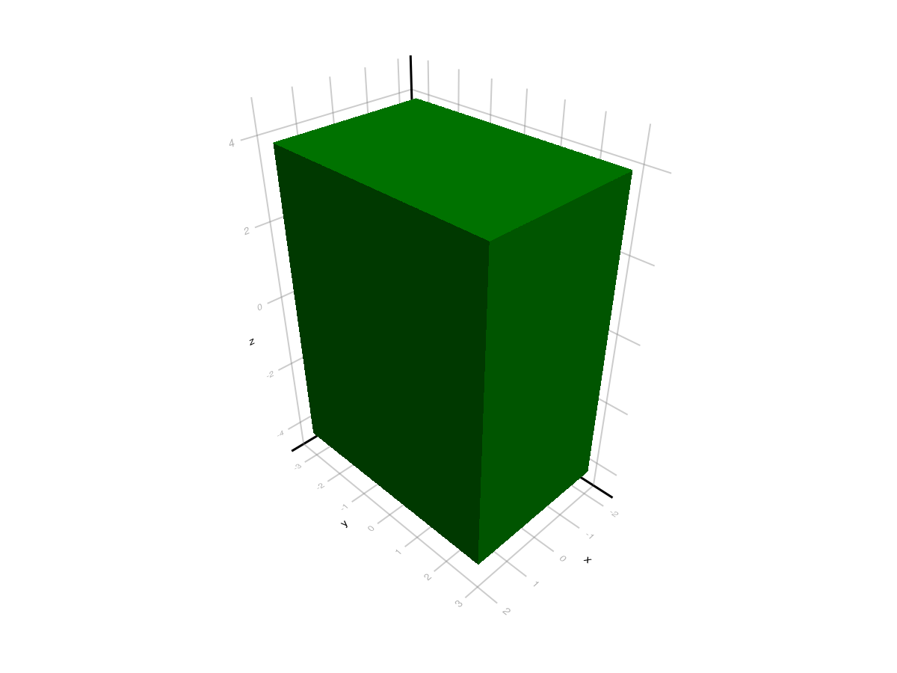
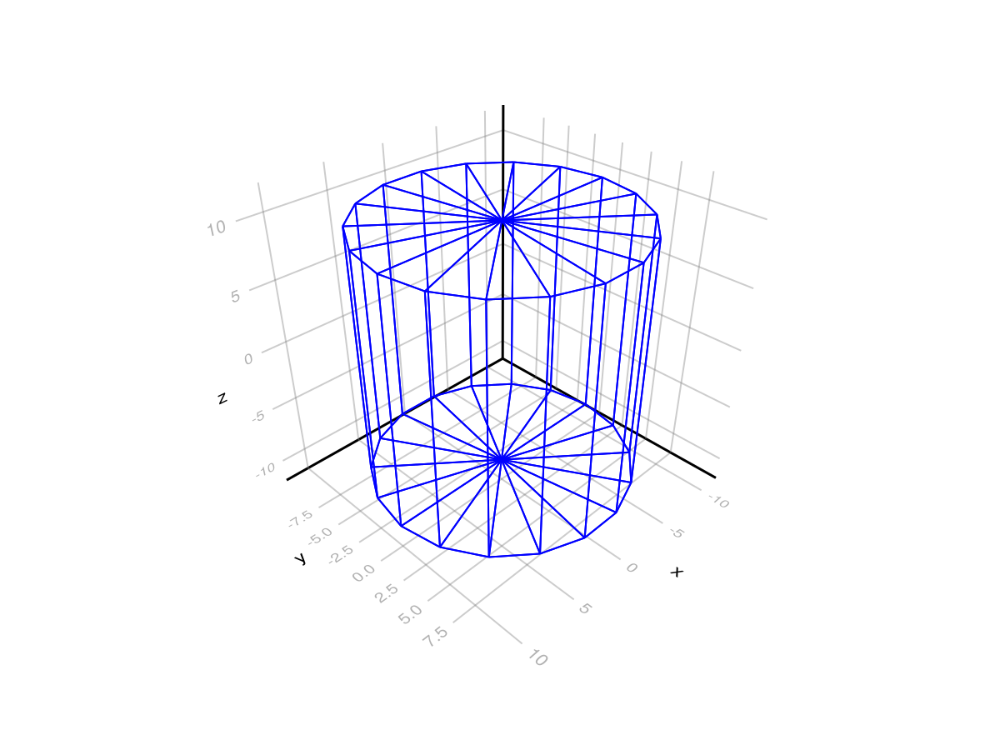
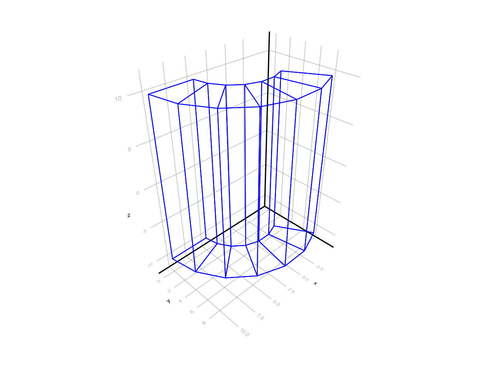
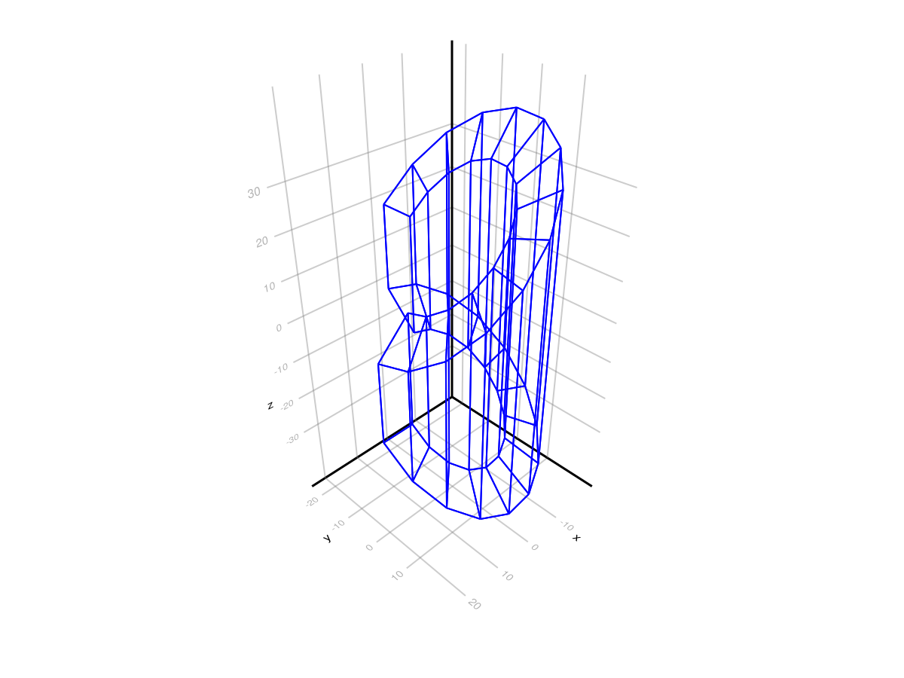
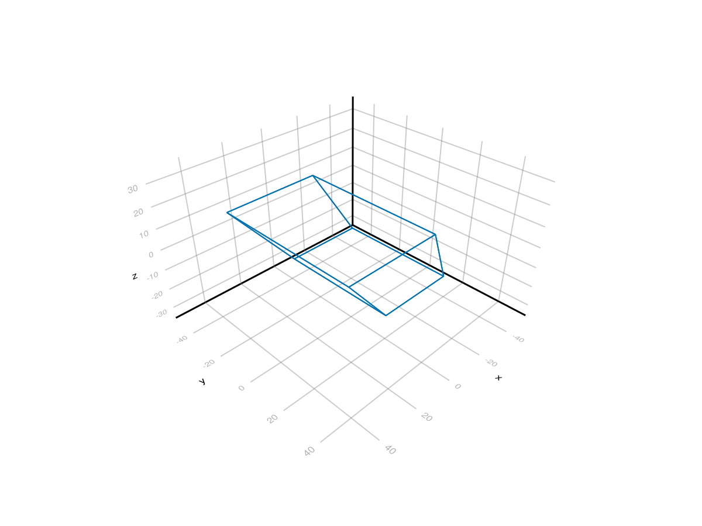
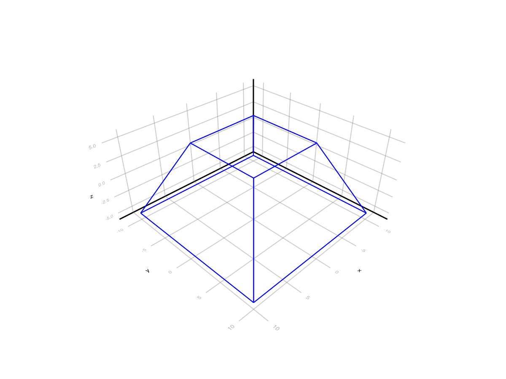
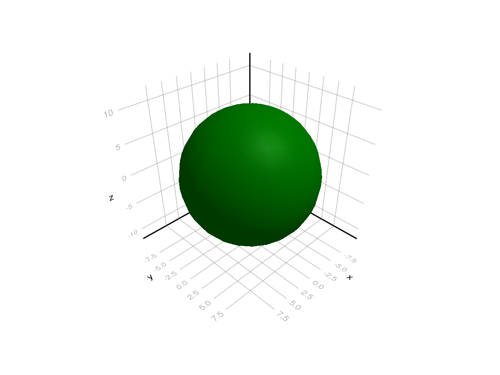
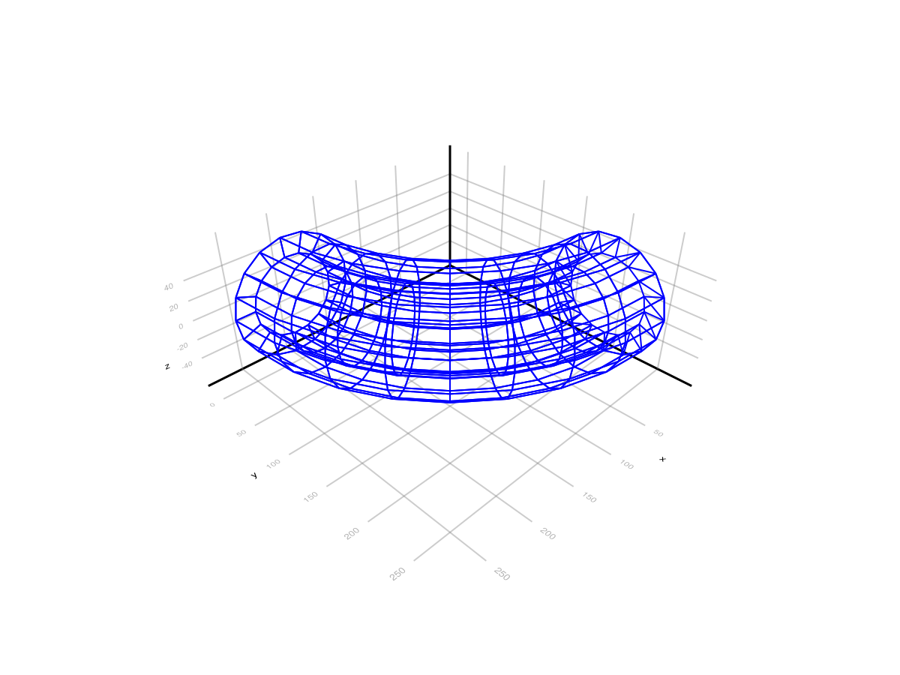
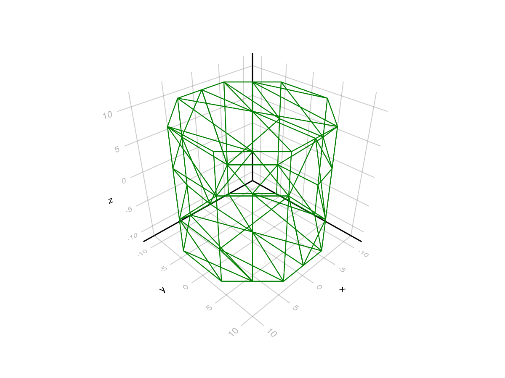
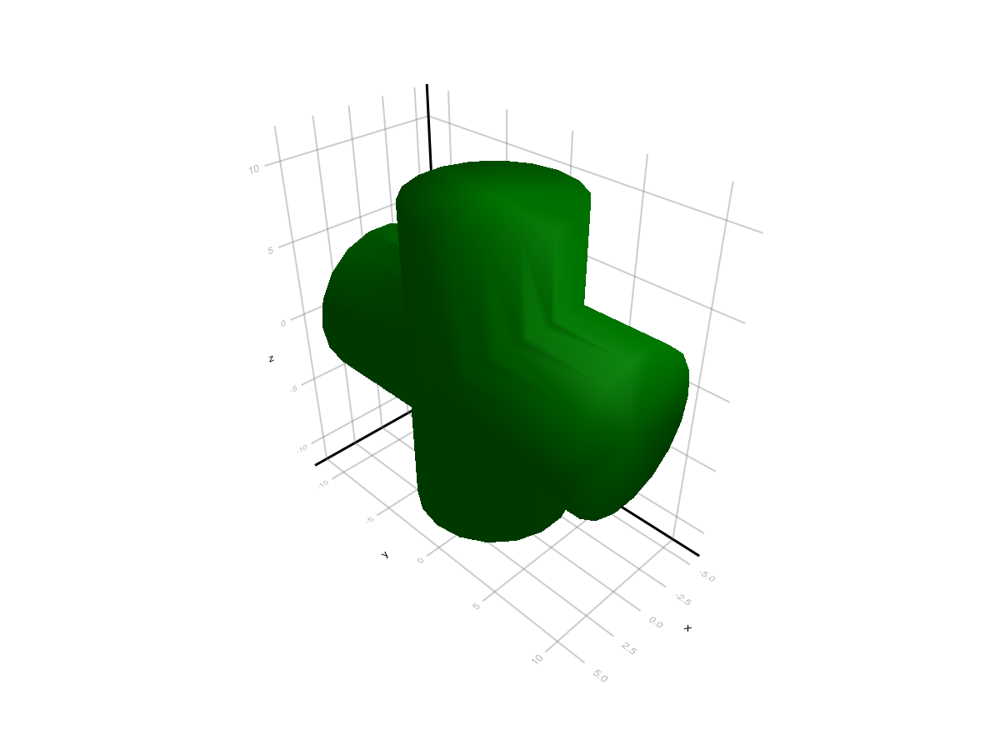

Geant4 Solids
Notebook to exercise all the types of solids defined in Geant4. This is the full list:
- G4Box
- G4Tubs
- G4CutTubs
- G4Para
- G4Trap
- G4Sphere
- G4Orb
- G4Torus
- G4Polycone
- G4Polyhedra
- G4EllipticalTube
- G4Ellipsoid
- G4Cons
- Booleans
using Geant4
using Geant4.SystemOfUnits
using CairoMakie
using GeometryBasics, Rotations, IGLWrap_jll # to force loding G4Vis extensionG4Box
box = G4Box("Box", 2,3,4)
img = draw(box;color=:green)
display("image/png", img)
G4Tubs
Cylindrical Section or Tube
- name::String
- rmin::Float64
- rmax::Float64
- dz::Float64
- ϕ₀::Float64
- Δϕ::Float64
tub1 = G4Tubs("tub1",0,10,10,0,2π)
img = draw(tub1, wireframe=true, color=:blue)
display("image/png", img)
tub2 = G4Tubs("tub2",5,10,10,0, 2π/3)
img = draw(tub2, wireframe=true, color=:blue)
display("image/png", img)
G4CutTubs
Cylindrical Cut Section. A cut in Z can be applied to a cylindrical section to obtain a cut tube.
Arguments:
- name::String
- rmin::Float64
- rmax::Float64
- dz::Float64
- ϕ₀::Float64
- Δϕ::Float64
- lownormal::G4ThreeVector
- highnormal::G4ThreeVector
ctub = G4CutTubs("ctub", 12, 20, 20, 0, 3π/2, G4ThreeVector(0,-0.7,-0.71), G4ThreeVector(0.7,0,0.71))
img = draw(ctub, wireframe=true, color=:blue)
display("image/png", img)
G4Cons
- name::String
- rmin1::Float64
- rmax1::Float64
- rmin2::Float64
- rmax2::Float64
- dz::Float64
- ϕ₀::Float64
- Δϕ::Float64
cone1 = G4Cons("cone1", 0, 10, 0, 5, 10, 0, 2π)
img = draw(cone1, color=:blue, wireframe=true)
display("image/png", img)cone1 = G4Cons("cone1", 5, 10, 20, 25, 40, 0, 3π/4)
img = draw(cone1, color=:blue, wireframe=true)
display("image/png", img)cone1 = G4Cons("cone1", 5, 10, 2, 5, 5, 0, π/2)
img = draw(cone1, color=:orange, shading=true)
display("image/png", img)[33m[1m┌ [22m[39m[33m[1mWarning: [22m[39m`shading = true` is not valid. Use `Makie.automatic`, `NoShading`, `FastShading` or `MultiLightShading`. Defaulting to `MakieCore.Automatic()`.
[33m[1m‚îî [22m[39m[90m@ Makie ~/.julia/packages/Makie/ND0gA/src/lighting.jl:243[39mG4Para
A parallelepiped is constructed using: | parameter | description | | :–––– | :––––– | | dx,dy,dz | Half-length in x,y,z | | alpha | Angle formed by the Y axis and by the plane joining the centre of the faces parallel to the Z-X plane at -dy and +dy | | theta | Polar angle of the line joining the centres of the faces at -dz and +dz in Z | | phi | Azimuthal angle of the line joining the centres of the faces at -dz and +dz in Z |
para = G4Para("para", 20,30,30, 0, π/4, π/6)
#drawDistanceToOut(para, 100000)
img = draw(para, wireframe=true)
display("image/png", img)
G4Trd
function GeometryBasics.coordinates(trd::G4Trd, facets=6)
- x1::Float64 XHalfLength1
- x2::Float64 XHalfLength2
- y1::Float64 YHalfLength1
- y2::Float64 YHalfLength2
- z::Float64 ZHalfLength
trd1 = G4Trd("trd1", 10, 5, 10, 5, 5)
img = draw(trd1, wireframe=true, color=:blue)
display("image/png", img)
G4Trap
To build a generic trapezoid, the G4Trap class is provided. G4Trap is a solid with six trapezoidal faces, it has two bases parallel to the XY-plane and four lateral faces. The bases are located at the same distance from the XY-plane, but on opposite sides from it. Each of the bases has two edges parallel the X-axis. Let’s call the line joining middle point of these edges - the centre line of the base, and the middle point of this line - the centre of the base. An important property of G4Trap is that the line joining the centres of the bases goes through the origin of the local coordinate system.
| parameter | description |
|---|---|
| z | Half Z length - distance from the origin to the bases |
| theta | Polar angle of the line joining the centres of the bases at -/+z |
| phi | Azimuthal angle of the line joining the centre of the base at -pDz to the centre of the base at +z |
| y1, y2 | Half Y length of the base at -z. +z |
| x1, x2, x3, x4 | Half X length at smaller, bigger Y of the base at -z, +z |
| alpha1, alpha2 | Angle between the Y-axis and the centre line of the base at -z. +z |
trap = G4Trap("trap", 60, 20deg, 5deg, 40, 30, 40, 10deg, 16, 10, 14, 10deg)
img = draw(trap, wireframe=true, color=:green)
display("image/png", img)G4Sphere
- rmin::Float64 inner radius
- rmax::Float64 outer radius
- ϕ₀::Float64 origin phi angle [0,2π]
- Δϕ::Float64 delta phi angle
- θ₀::Float64 origin theta angle [0,π]
- Δθ::Float64 delta theta angle
sph = G4Sphere("sphere", 7,10, 0, pi/2, pi/4, pi/2 )
img = draw(sph, wireframe=true, color=:gray)
display("image/png", img)G4Orb
Complete sphere
orb = G4Orb("orb", 10)
img = draw(orb, wireframe=false, color=:green)
display("image/png", img)
G4Torus
| parameter | description |
|---|---|
| rmin | Inside radius |
| rmax | Outside radius |
| rtor | Swept radius of torus |
| ϕ₀ | Starting phi angle in radians ( ϕ₀+Δϕ <= 2π, ϕ₀ > -2π) |
| Δϕ | Delta angle of the segment in radians |
torus = G4Torus("torus", 40, 60, 200, 0, π/2)
img = draw(torus, wireframe=true, color=:blue)
display("image/png", img)
img = drawDistanceToOut(torus, 100000)
display("image/png", img)
G4Polycone
| parameter | description |
|---|---|
| ϕ₀ | Starting phi angle in radians ( ϕ₀+Δϕ <= 2π, ϕ₀ > -2π) |
| Δϕ | Delta angle of the segment in radians |
| numZPlanes | Number of Z planes |
| zPlane | Position of Z planes, with Z in increasing order |
| rInner | Tangent distance to inner surface |
| rOuter | Tangent distance to outer surface |
pcon = G4Polycone("pcone", π/4, 3π/2, 9,
[ 5., 7., 9., 11., 25., 27., 29., 31., 37. ],
[ 0., 0., 0., 0., 0., 0., 0., 0., 0. ],
[ 0., 10., 10., 5. , 5., 10. , 10. , 2., 2.]
)Geant4.G4PolyconeAllocated(Ptr{Nothing} @0x0000000003d7c2f0)img = draw(pcon, wireframe=true, color=:blue)
display("image/png", img)G4Polyhedra
| parameter | description |
|---|---|
| ϕ₀ | Starting phi angle in radians ( ϕ₀+Δϕ <= 2π, ϕ₀ > -2π) |
| Δϕ | Delta angle of the segment in radians |
| numZPlanes | Number of Z planes |
| numSides ! Number of sides | |
| zPlane | Position of Z planes, with Z in increasing order |
| rInner | Tangent distance to inner surface |
| rOuter | Tangent distance to outer surface |
pgon = G4Polyhedra("pgon", -π/4, 5π/4, 3, 7,
[ 0., 5., 8., 13. , 30., 32., 35. ],
[ 0., 0., 0., 0., 0., 0., 0. ],
[ 0., 15., 15., 4., 4., 10., 10.])
img = draw(pgon, wireframe=true, color=:blue)
display("image/png", img) G4EllipticalTube
A tube with an elliptical cross section with elliptical semi-major and semi-minor axes along the X and Y cartesian axes.
| parameter | description |
|---|---|
| xSemiAxis | Half length of axis along X |
| ySemiAxis | Half length of axis along Y |
| Dz | Half length Z |
etub = G4EllipticalTube("etube", 5., 10., 20.)
img = draw(etub, wireframe=true, color=:green)
display("image/png", img)G4Ellipsoid
The general ellipsoid with possible cut in Z
| parameter | description |
|---|---|
| xSemiAxis | Half length of axis along X |
| ySemiAxis | Half length of axis along Y |
| zSemiAxis | Semiaxis in Z |
| zBottomCut | lower cut plane level, Z |
| zTopCut | upper cut plane level, Z |
ellip = G4Ellipsoid("ellip", 10., 20., 50., -10., 40.)
img = draw(ellip, wireframe=true, color=:green)
display("image/png", img)G4SubtractionSolid
box1 = G4Box("box1", 10,10,10)
tub1 = G4Tubs("tub1",0,7,11,0,2π)
sub1 = G4SubtractionSolid("sub1", CxxPtr(box1), CxxPtr(tub1))
img = draw(sub1, wireframe=true, color=:green)
!isnothing(img) && display("image/png", img)img = drawDistanceToOut(sub1, 100000)
display("image/png", img)
G4IntersectionSolid
box1 = G4Box("box1", 10,10,10)
t1 = G4Transform3D(G4RotationMatrix(π/4,0,0), G4ThreeVector())
inter1 = G4IntersectionSolid("inter1", CxxPtr(box1), CxxPtr(box1), t1)
img = draw(inter1, wireframe=true, color=:green)
!isnothing(img) && display("image/png", img)
img = drawDistanceToOut(inter1, 100000)
display("image/png", img)
<a id='G4UnionSolid'></a>
G4UnionSolid
tub1 = G4Tubs("tub1",0,5,10,0,2π)
t1 = G4Transform3D(G4RotationMatrix(0,π/2,0), G4ThreeVector())
union1 = G4UnionSolid("union1", CxxPtr(tub1), CxxPtr(tub1), t1)
img = draw(union1, wireframe=false, color=:green)
!isnothing(img) && display("image/png", img)
img = drawDistanceToOut(union1, 100000)
display("image/png", img)